Nova tecnificació de futbol sala al F.S. Parets
Abril 2026
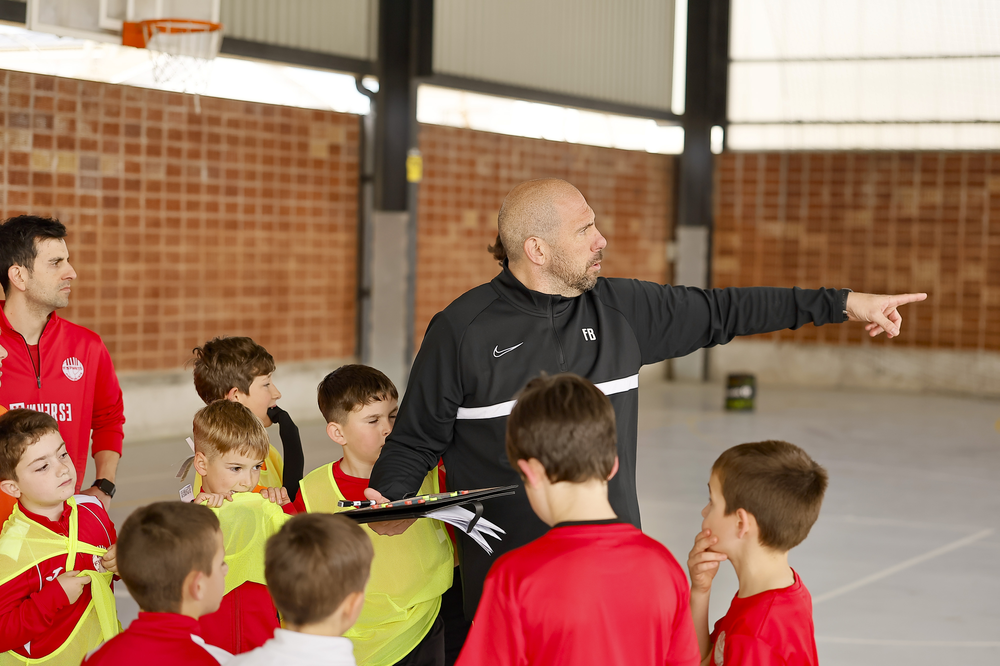
El F.S. Parets posa en marxa una nova tecnificació dirigida a jugadors i jugadores que volen millorar el seu nivell tècnic i tàctic.
La tecnificació ha estat preparada pels entrenadors Albert Cardenas i Rafa Muñoz, amb l’objectiu de potenciar habilitats individuals i millorar la presa de decisions en joc real.
Dia 1
Primera jornada amb la participació de Fran Burgueño, exjugador del F.S. Parets i actual entrenador de porters de la Selecció Espanyola.
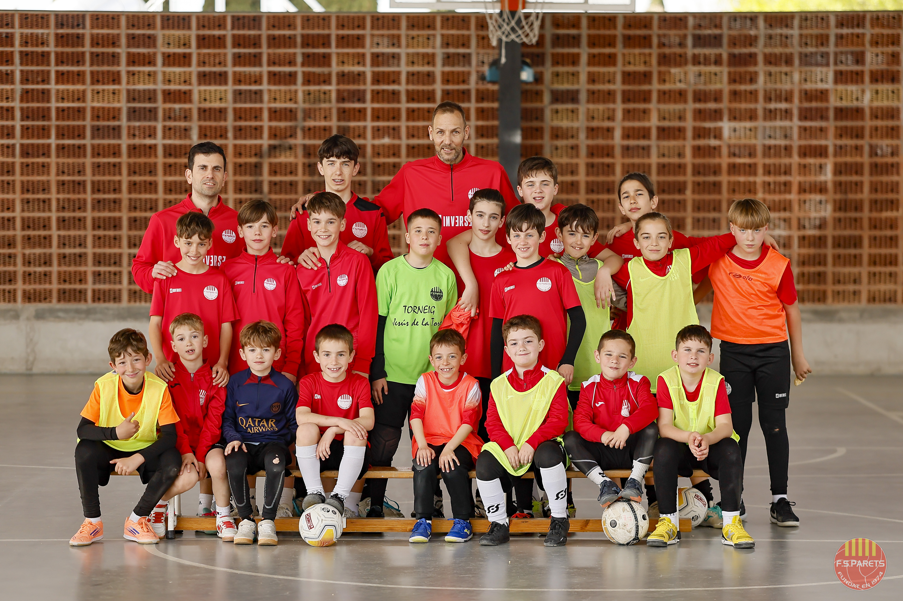
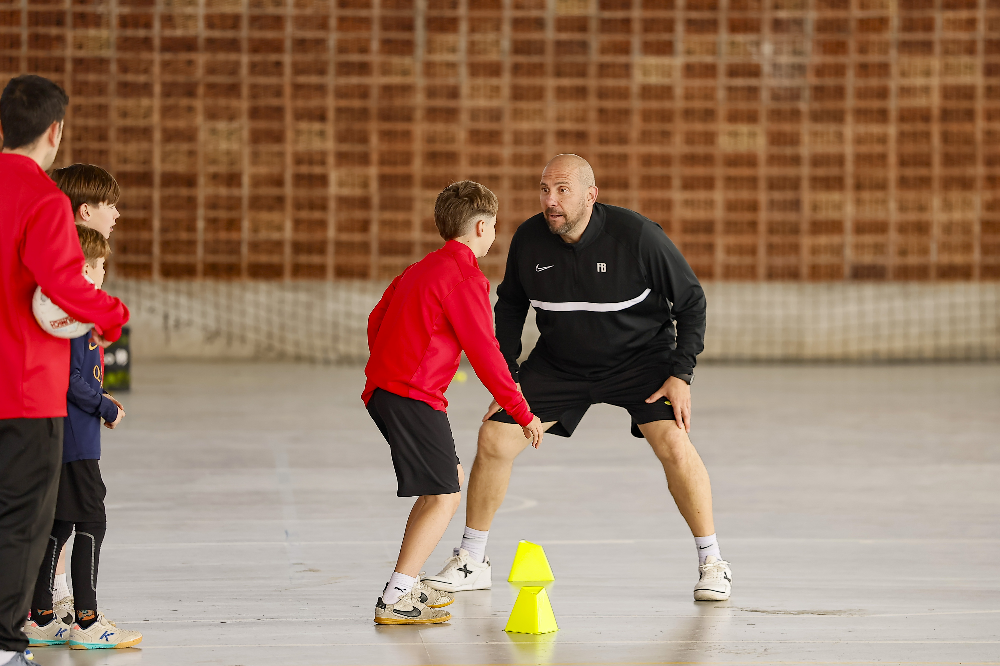
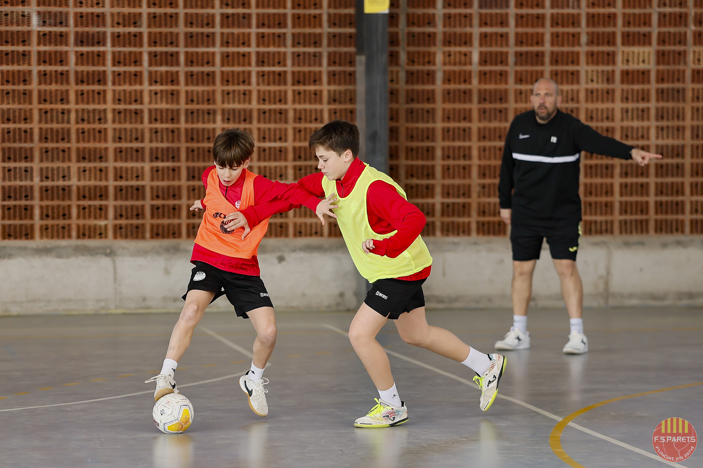
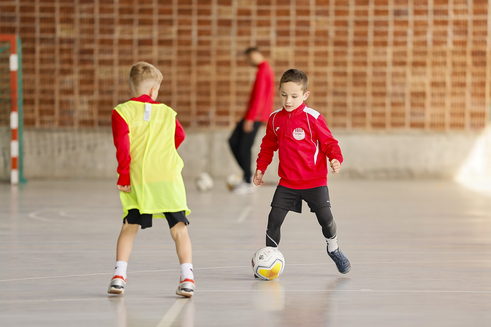
Dia 2
Segona jornada amb Fran Burgueño i Jordi Campoy, exjugador del Jaén Paraíso Interior, treballant aspectes tècnics i tàctics en situacions reals de joc.
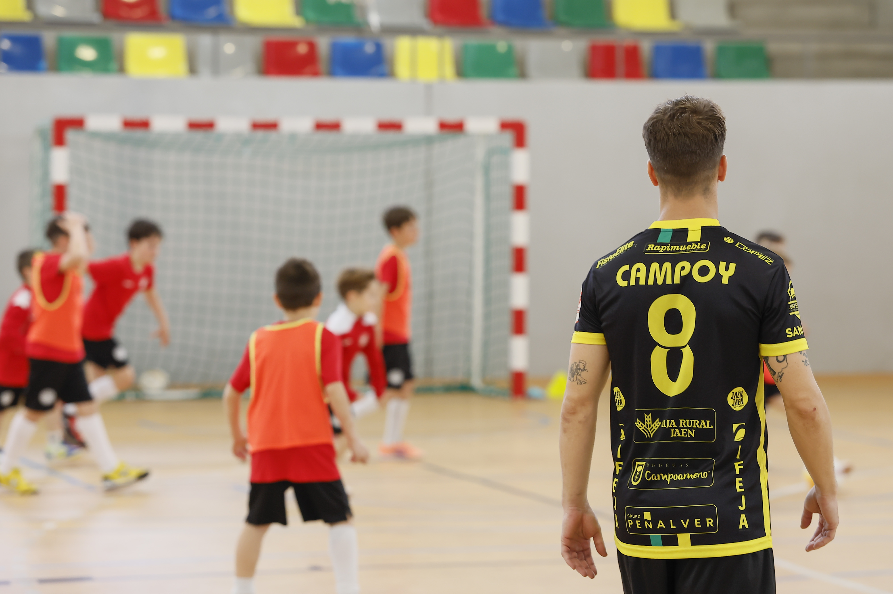
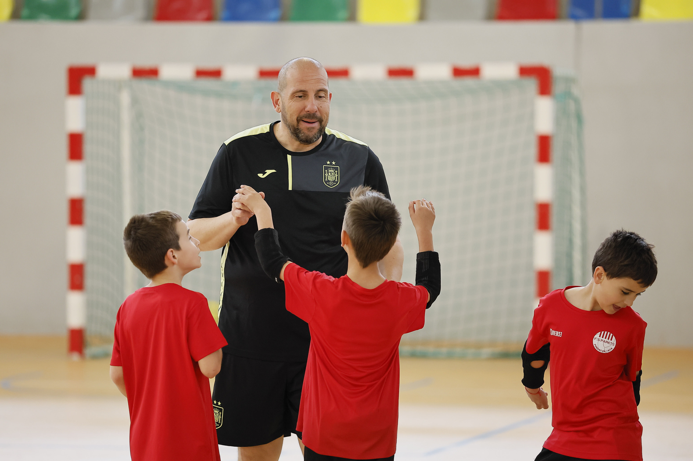
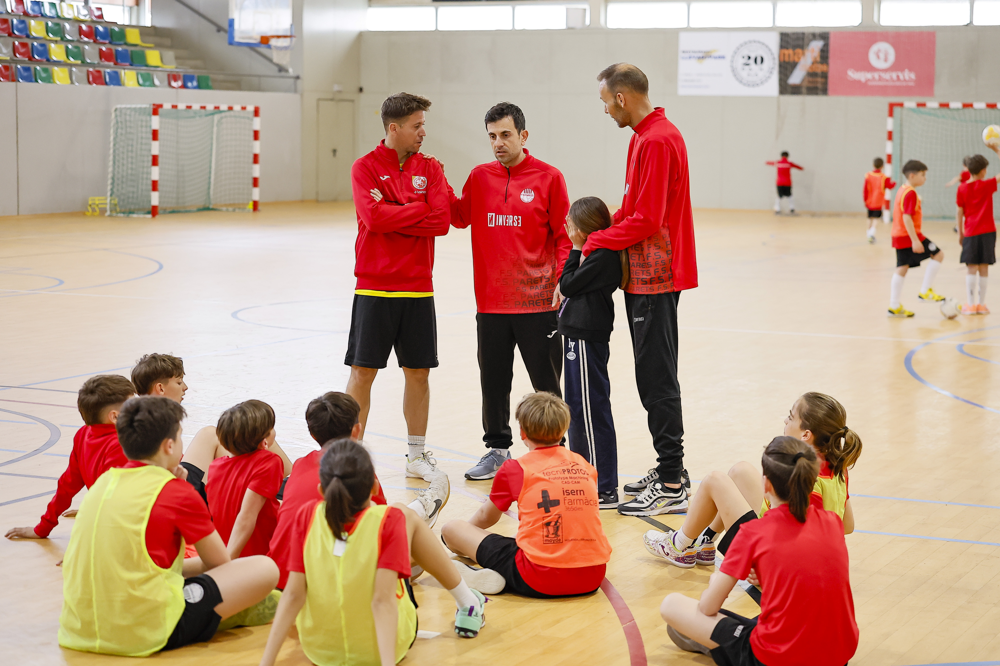
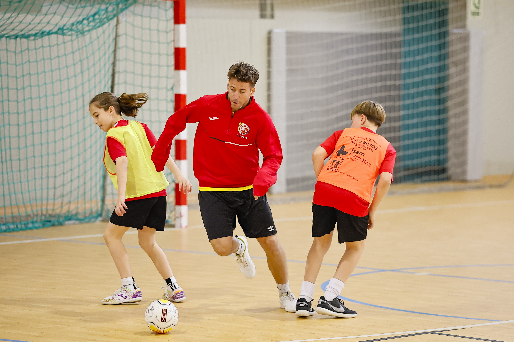
Dia 3
La tercera i última jornada ha comptat amb la participació de Fran Burgueño i Javi Rodríguez, entrenador del FC Barcelona de futbol sala. Una sessió especial que ha posat el punt final a la tecnificació, amb la participació activa dels jugadors i un gran ambient durant tota la jornada. La cloenda s’ha completat amb el sorteig de regals.
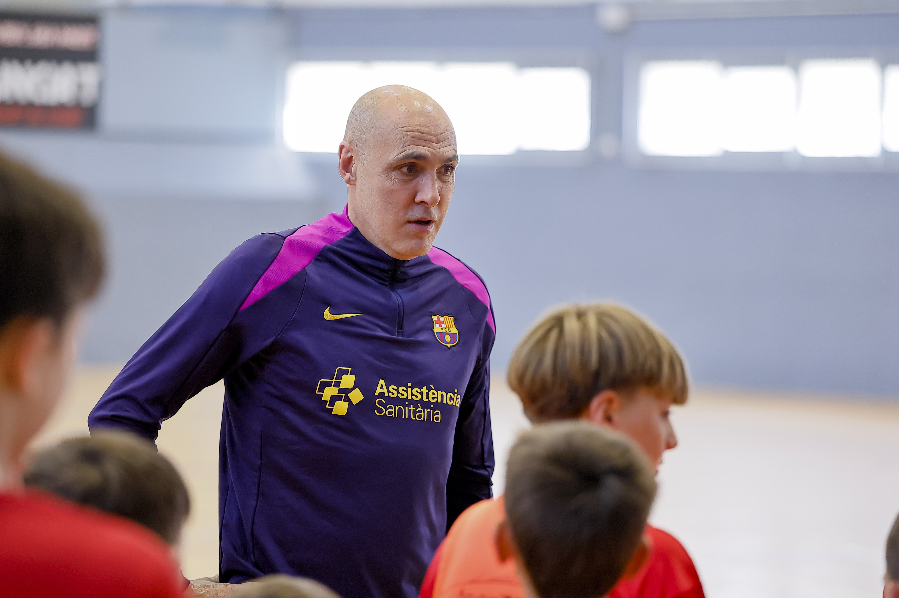
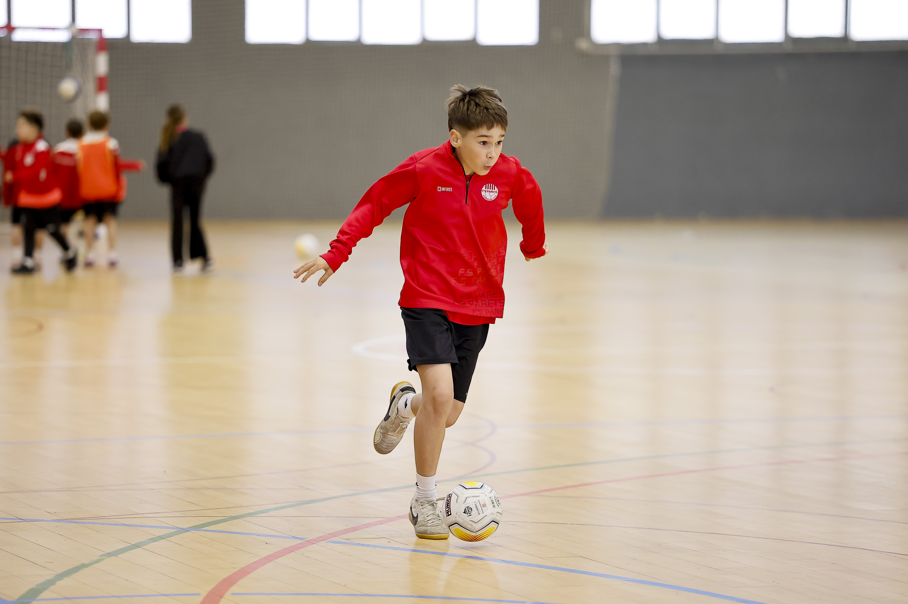
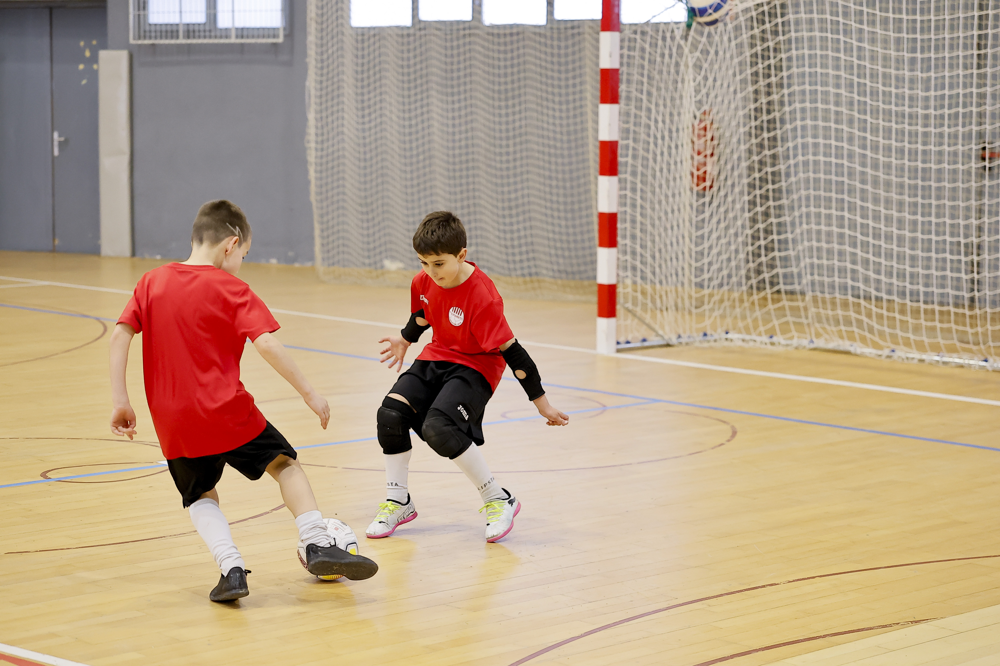
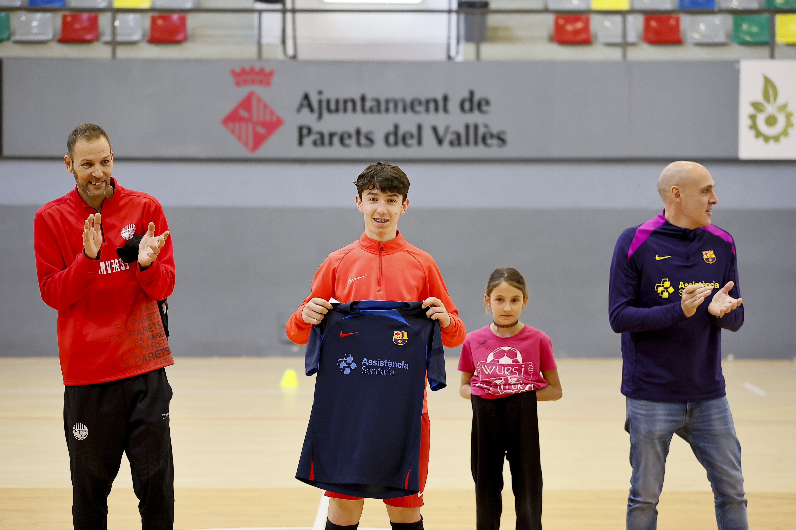